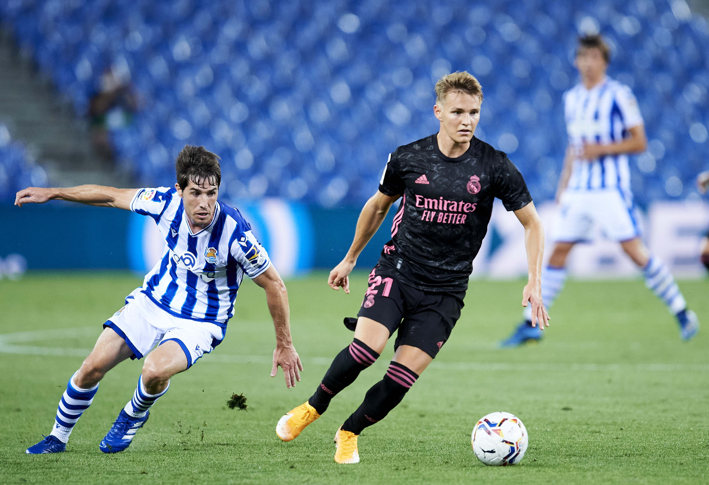
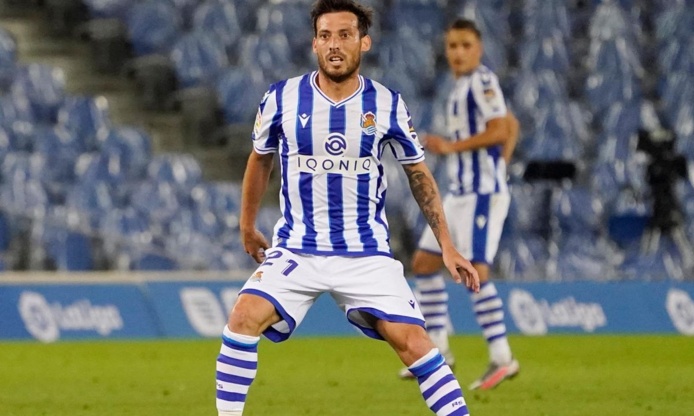

Final Score: Real Sociedad 0-0 Real Madrid
Real Madrid get their season off to a slow start with a goalless draw with Real Sociedad in Anoeta. Here are five key takeaways:
1. New Season, Same Real Madrid
All throughout the 2019/2020 season, Real Madrid had issues with finding the back of the net. It was only through Karim Benzema or penalties that they were able to score. I believed that the addition of Martin Ødegaard to the squad would remedy this issue, as he would help link the midfield to the forwards and allow Los Blancos to create more chances. Sadly, in this match Ødegaard was quiet, and so were Real Madrid’s forwards. Benzema was the only player to have any legitimate shots at Sociedad’s net, but they were all from poor positions and nothing came of them. One can only hope that Ødegaard will settle in and help inject some goals into this squad. This game called out for Luka Jovic, but Zidane seems to have a vendetta against the Serbian. His love for Benzema is beginning to get in the way of the team’s performances, and it could cost Real Madrid many points this season.
2. New-look Midfield Is Not The Answer For Real Madrid
Before this match, football fans were wondering how Zidane would fit all of his incredibly talented midfielders into the squad (as you can only play so many of Kroos, Casemiro, Modric, Fede Valverde, Isco, and Ødegaard at the same time). In the end, Zidane opted for a double-pivot of Modric and Kroos with Ødegaard ahead of them. Kroos and Modric worked excellently together in the first half, allowing Real Madrid to dominate possession (69%) and control the match. In the second half, it became apparent that a defensive midfielder was needed, as all three midfielders became visibly tired due to the amount of defensive work that they had to do. All throughout the second half Real Madrid’s midfield was overrun by that of Real Sociedad’s, and eventually, Zidane had to bring on Casemiro and Valverde to try and stabilize a team that was being blitzed by counter-attacks. Overall, this midfield system wasn’t horrible, but I don’t think we’ll see it again. I expect Zidane to roll out the tried and tested midfield of Casemiro, Kroos, and Modric next week against Real Betis, just to be safe.

3. Real Sociedad A Shoo-in For Europa League
Even though Real Sociedad lost their best player from last season in Martin Ødegaard, they still played like the same ferocious side that took La Liga by storm in 2019 and early 2020. Their quick counter-attacks are devastating due to the technical capabilities of players like Mikel Oyazabal, Portu, and Mikel Merino. Like last season, Real Sociedad are so difficult to beat because of their team’s defensive work rate. Whenever Real Madrid had the ball today, Sociedad had 10 of their 11 players packed into their own penalty area, preventing Madrid from creating any chances in the box.
I believe that if Real Sociedad can continue playing as they did against Real Madrid, they will easily qualify for the Europa League again (as long as they don’t experience a run of poor form like they did after the restart last season). The lack of quality teams in La Liga this season should make it almost an expectation that they qualify for Europa.
4. A Mixed Showing From Real Madrid’s Youth
- Rodrygo: Lost the ball too many times and failed to create and attack space on the right-wing. His inexperience showed today, and I would be very surprised if he starts against Real Betis.
- Vinicius Jr.: His dribbling was fantastic as always, but his end product was as bad as ever. Also, his decision making in the final third was poor. He needs time and confidence, but I feel that the fans are running out of patience regarding him. Once Eden Hazard is fit, it will become difficult for Vinicius to find match time.
- Ødegaard: Showed flashes of what he could do, but it was a quiet game overall for the Norweigan. He deserves a bit of time to get settled in Madrid.
- Mendy: I have nothing bad to say about Mendy, other than that he pushed very far (maybe too far) up the left flank to support Vinicius. He left Sergio Ramos vulnerable at the back, but Real Sociedad only capitalized on this rarely. Defensively he was sound, and he was fine in possession.
- Fede Valverde: He should have come on much earlier, and when he did, there was an immediate change to the team. He is such a dynamic player, and his speed and passing ability caused a bit of trouble for the tired Real Sociedad midfield and defense late in the match.
- Marvin Park: I never expected Zidane to play any of the La Fabrica graduates, but I guess Zidane surprised me a lot today. The Spanish/Nigerian/Korean winger was good both offensively and defensively, but he failed to make a real impact on the match.
- Sergio Arribas: Came on in stoppage time, so I don’t have much to say. I would have liked to see him come on earlier.
5. Can David Silva Be Sociedad’s Ødegaard Replacement?
The ex-Manchester City man made his Real Sociedad debut against Real Madrid, coming on part-way through the second half. He looked good, moving the ball very well (as we expect of David Silva). He seems to be settling in well in Sociedad, and I hope that he becomes a consistent starter for them. His distribution talents will be incredibly useful in this side, as he will be able to make the passes needed to find Alexander Isak or Portu on a breakaway. My only hesitations regarding Silva are about his age; he’s 34 now, and I don’t know if he is capable of playing in Sociedad’s high-work rate system week-in and week-out. Hopefully, he proves me wrong, he is a fantastic player, and La Liga is lucky to have him.
